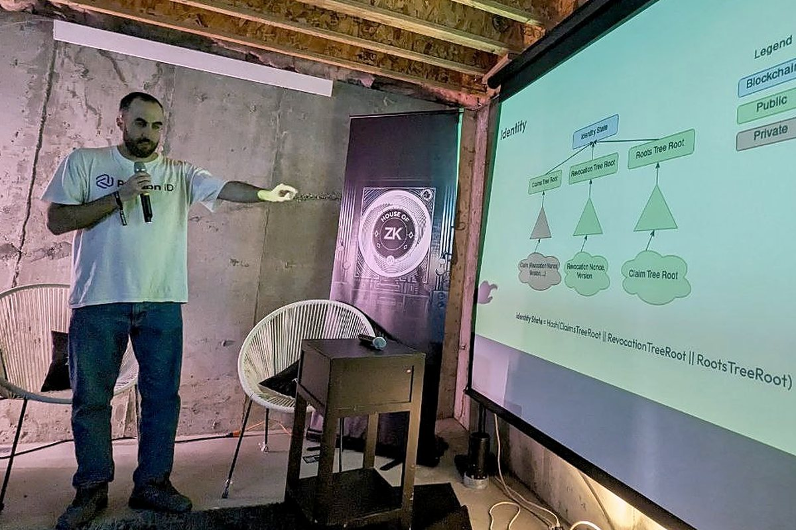
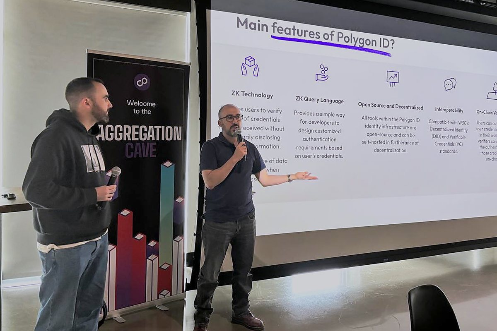
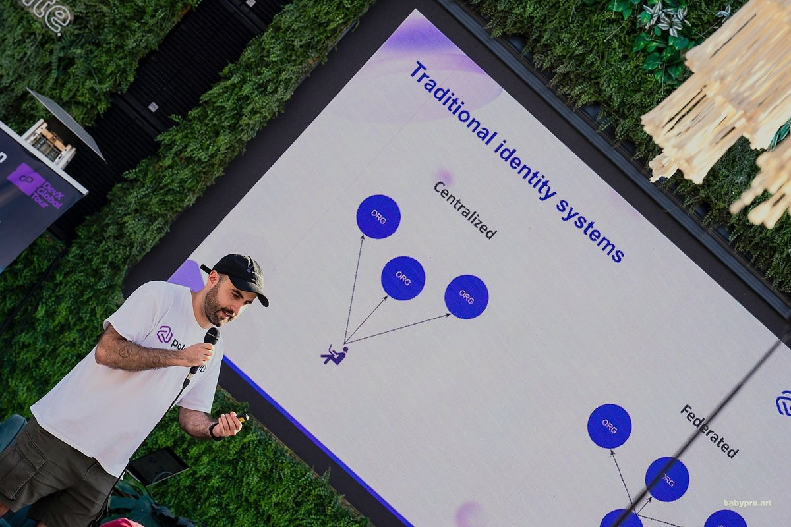
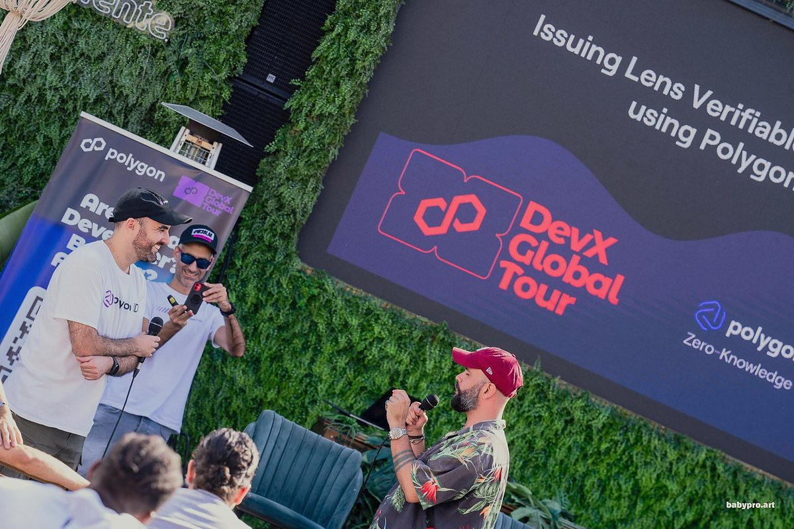
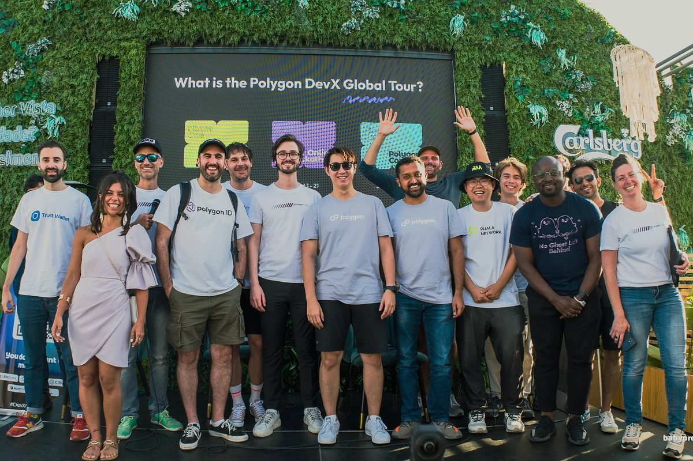

Elías García
Software engineer in Porto, Portugal
Open to remote roles
About
I’ve spent nine years building products end to end, from real-time data pipelines and APIs to the interfaces on top. Most recently I led engineering at Vesu, a lending protocol on Starknet. Before that, four years at Polygon Labs, leading the frontend of Polygon zkEVM and the team behind Polygon ID.
These days I’m also exploring how AI agents change the way small teams ship. This site is where I keep the projects and notes.
Projects
All projectsWork experience
Writing
All postsSpeaking
-
Preserving privacy with Polygon ID profiles
House of ZK, EthDenver

-
Getting started with Polygon ID
Polygon AggCave, EthDenver

-
Issuing verifiable credentials with Polygon ID
Polygon DevX Global Tour, Lisbon



Teaching
Education
–
BSc Computer Science at University of A Coruña
Specialization in software engineering
Contact
- eliasgarciadev@gmail.com
- GitHub
- elias-garcia
- elias-garcia